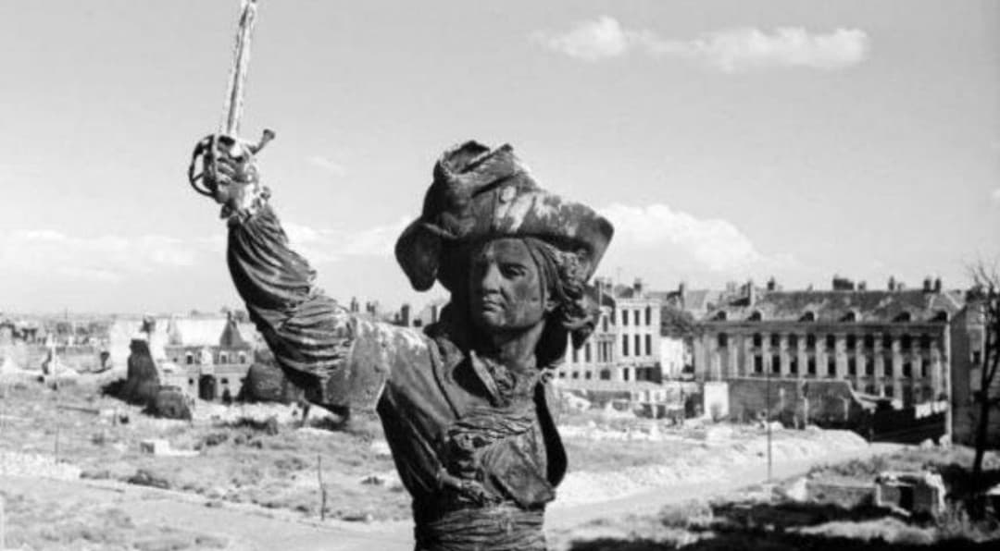
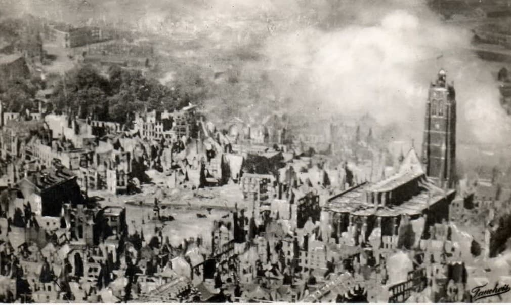
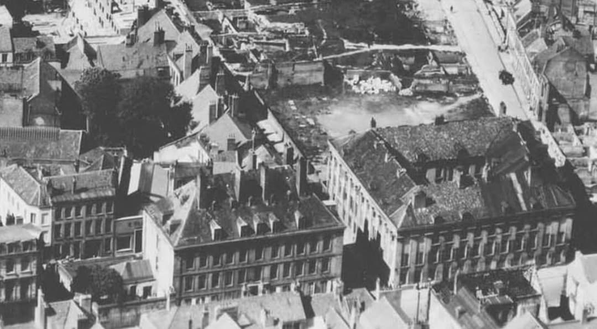
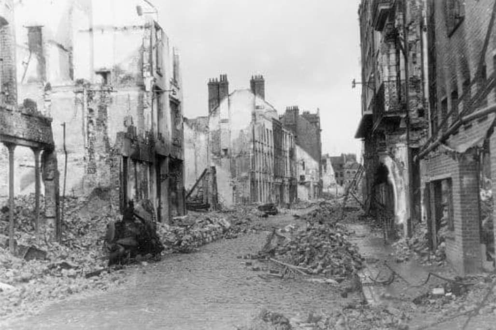
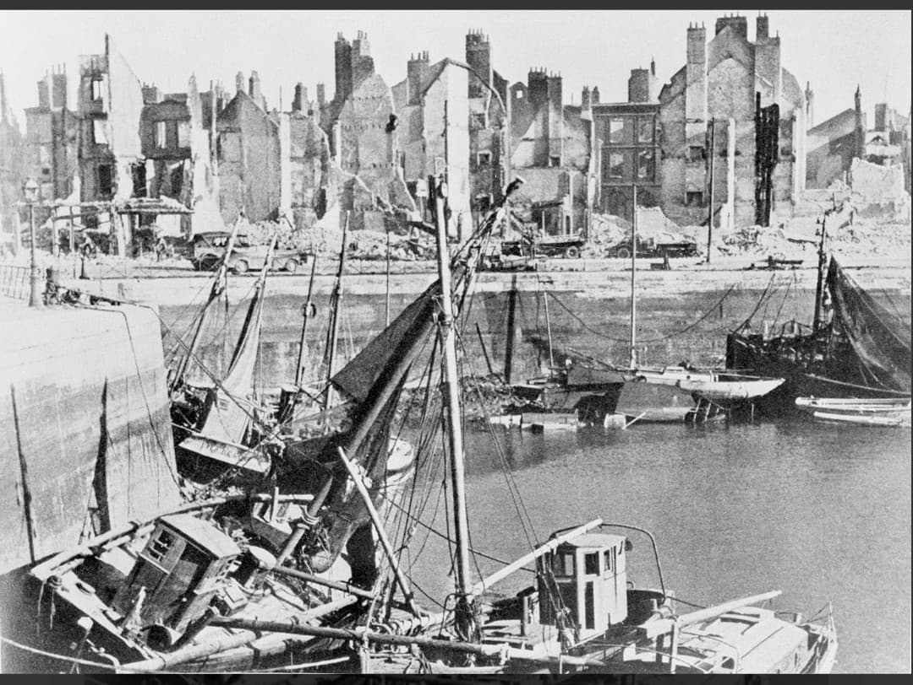
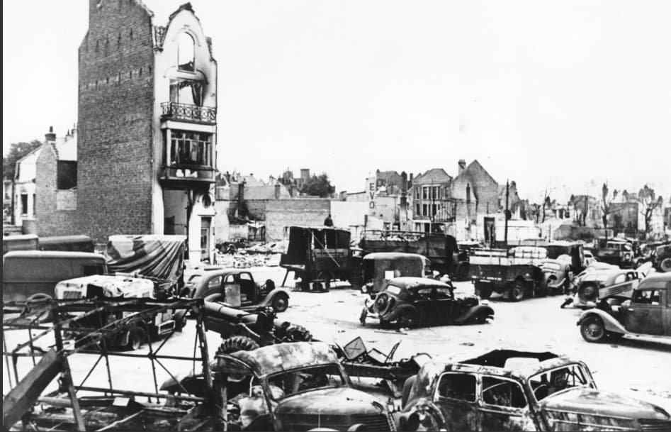
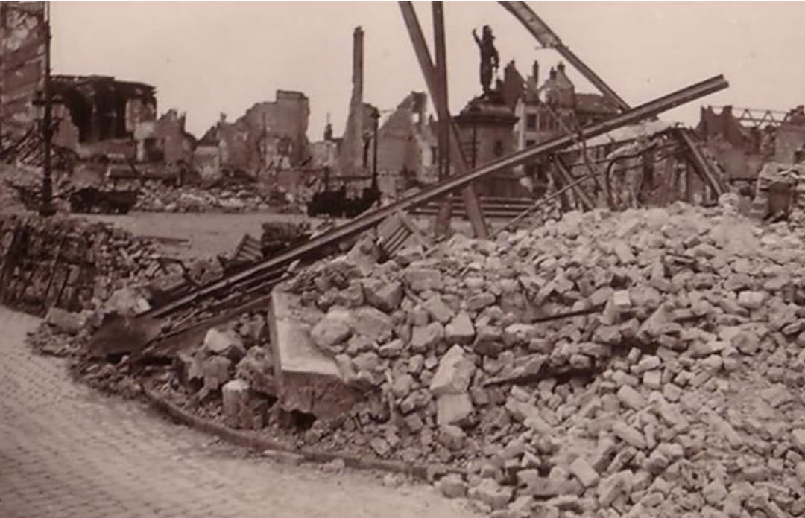
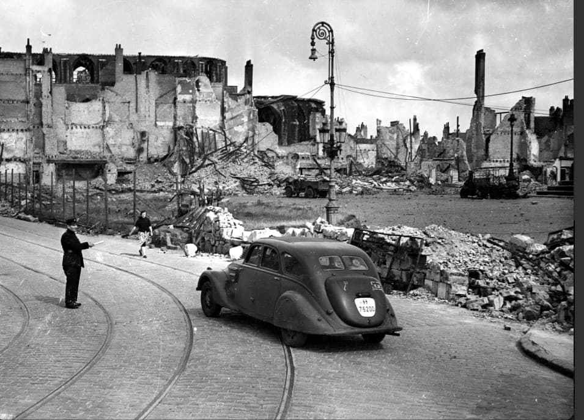

Au printemps 1940, la guerre éclair déclenchée par l’Allemagne frappe de plein fouet la France, la Belgique et les Pays-Bas. En quelques jours, les lignes de défense sont contournées, les armées alliées sont bousculées et se retrouvent progressivement repoussées vers le nord.
Les unités françaises, britanniques et belges se replient en désordre, cherchant un dernier point d’appui. La mer du Nord devient une limite infranchissable : derrière elle, il n’y a plus de retraite possible. Dunkerque, ville portuaire déjà marquée par l’histoire de Jean Bart, devient alors le dernier verrou, le dernier espoir.
La bataille de Dunkerque commence dans ce contexte de désorganisation, de pression constante et d’urgence absolue. Les Alliés doivent tenir coûte que coûte, pour gagner du temps et éviter l’anéantissement complet de leurs forces.

Le 20 mai 1940, les troupes allemandes atteignent la mer à Abbeville. Ce mouvement coupe les armées alliées du reste de la France. Une vaste poche se forme, englobant la région de Dunkerque et les forces qui s’y trouvent.
Jour après jour, les unités allemandes resserrent l’étau. Les routes sont coupées, les voies ferrées détruites, les communications perturbées. Les Alliés se retrouvent piégés dans un espace de plus en plus réduit, sous un bombardement quasi permanent.
Dunkerque devient une ville assiégée. Les civils voient les colonnes de soldats traverser les rues, les véhicules se masser, les positions de défense se mettre en place. La ville se prépare à subir une épreuve dont personne ne mesure encore l’ampleur.

Les bombardements allemands frappent la ville sans relâche. Les quartiers résidentiels, les commerces, les bâtiments publics, les églises : rien n’est épargné. Les incendies se déclarent partout, alimentés par les matériaux, les stocks, les infrastructures détruites.
Les habitants se réfugient dans les caves, les abris improvisés, les sous-sols des immeubles. La vie quotidienne disparaît. Il ne reste plus que le bruit des explosions, la fumée, la poussière et l’angoisse.
Dunkerque, la cité de Jean Bart, se transforme en un paysage de ruines. Les rues autrefois animées deviennent méconnaissables. Les silhouettes des bâtiments se découpent dans un décor de décombres.


Le port de Dunkerque est un objectif stratégique majeur. Les Allemands savent que c’est par là que les Alliés peuvent espérer évacuer leurs troupes. Les quais, les docks, les installations portuaires sont donc frappés avec une intensité particulière.
Les navires sont touchés, coulés, incendiés. Les infrastructures sont éventrées, les grues renversées, les entrepôts détruits. Chaque mouvement de bateau devient dangereux, chaque approche de la côte se fait sous la menace des bombes et des obus.
Malgré cela, le port continue de fonctionner tant bien que mal. Des marins, des soldats, des civils s’y activent, au milieu des ruines, pour maintenir un minimum de capacité d’accueil. C’est dans ce décor que se préparera l’Opération Dynamo.

Dans les rues de Dunkerque, les colonnes de véhicules militaires et civils sont prises sous le feu. Camions, voitures, blindés : beaucoup sont détruits, abandonnés, carbonisés. Ils témoignent de la violence des combats et de la difficulté des mouvements.
Les soldats doivent parfois continuer à pied, en contournant les carcasses de véhicules, les cratères d’obus, les amas de débris. La ville devient un labyrinthe dangereux, où chaque carrefour peut être pris sous le feu.

Au milieu des ruines, certaines statues et monuments subsistent. Ils semblent fragiles, isolés, mais ils résistent. Ces silhouettes de pierre ou de métal deviennent des repères dans un paysage dévasté.
La statue de Jean Bart, figure emblématique de la ville, incarne cette idée de résistance. Même entourée de décombres, elle rappelle que Dunkerque a déjà connu des combats, des sièges, des épreuves, et qu’elle a toujours survécu.

Les soldats alliés circulent dans une ville méconnaissable. Ils organisent des points de défense, des postes de contrôle, des itinéraires pour les colonnes de troupes. Ils doivent protéger les civils tout en préparant la suite des opérations.
Dans ce décor de ruines, chaque décision compte. Tenir une rue, garder un carrefour, maintenir une liaison avec le port : tout cela se fait sous la menace constante des bombardements et des attaques.

La bataille de Dunkerque est l’histoire d’une ville martyr, d’une population prise au piège, d’une armée qui tente de survivre dans des conditions extrêmes. Elle prépare directement l’Opération Dynamo, qui permettra de sauver plus de 338 000 soldats.
Mais derrière les chiffres et les opérations, il reste une réalité : Dunkerque est l’une des villes les plus détruites de France en 1940. La cité de Jean Bart porte encore aujourd’hui les traces de cette épreuve, dans sa mémoire, dans ses monuments, dans ses ruines conservées ou photographiées.